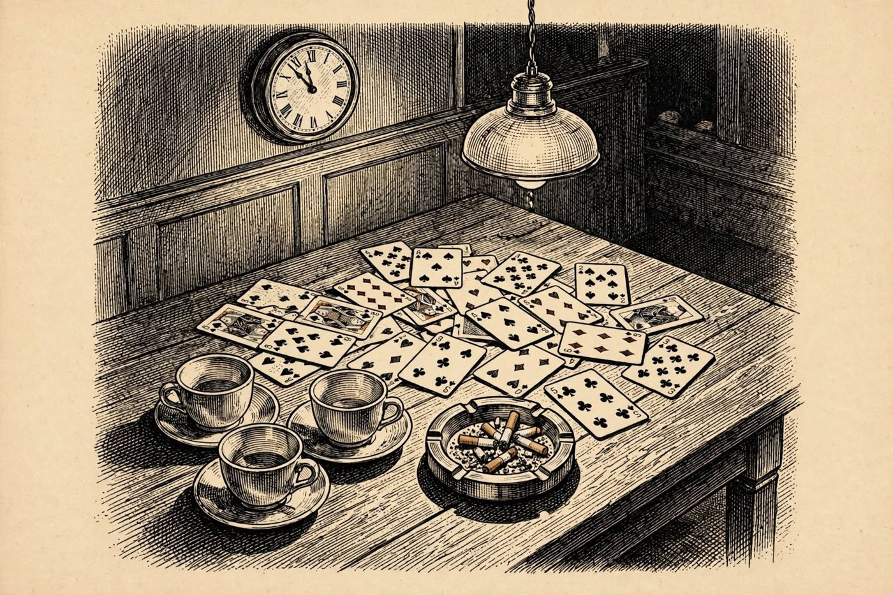

18 de diciembre
La laguna de 15 minutos
Libro · págs. 76-79
Audio del día
Transcripción
«Se lo confieso, detective… Me dormí en la mesa del salón de servicio. Llevaba muchas horas despierta y puse la cabeza sobre los brazos un ratito. Hugo dice que fue a la cocina a por café, y Teo ya estaba en su habitación. Mire el registro de las llaves: asigne cada una a su dueño y vea qué hacíamos cada uno de nosotros. Hay un tramo de esa noche en el que nadie puede decir con quién estaba cada cual.»

Intenta resolverlo primero. Abre solo lo que necesites, en este orden.
1Pista sutil
Teo usó la llave 19 para ir a su habitación a las 23:05. Dado que Mila no se movió del salón, su llave (07) solo registra su entrada a dormir.
2Comprobación parcial
La llave 12 pertenece a Hugo (visita a la cocina a las 23:35 y 23:50) y la llave 23 pertenece a Ingrid (aperturas del bar a las 23:42 y 23:49).
3Pista fuerte
Si Teo es la llave 19, a Mila solo le queda la habitación 2 (llave 07). Entre Hugo e Ingrid se reparten la cocina y el bar, y el bar solo lo abre el barman o la secretaria.
4Solución oficialSpoiler si no lo has intentado
Asignación de llaves: 19 = Teo, 07 = Mila, 12 = Hugo, 23 = Ingrid.
Análisis de la laguna: Entre las 23:35 y las 23:50, Hugo estaba en la cocina, Teo en su cuarto y Mila dormida. NINGÚN testigo despierto estuvo con Ingrid en el salón.
Para el desenlace de la historia, vuelve al libro: la sección de soluciones está al final.